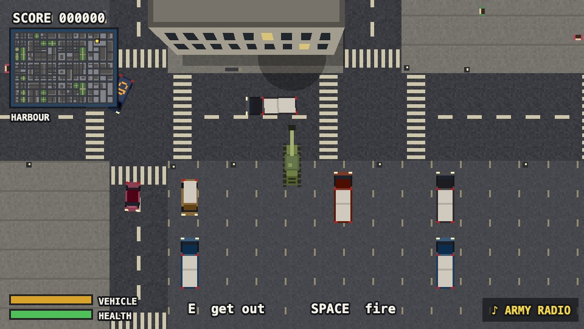
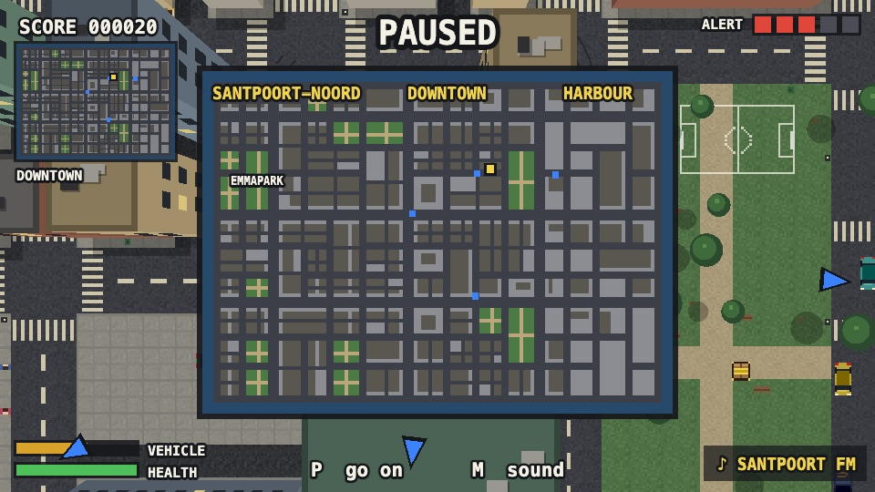
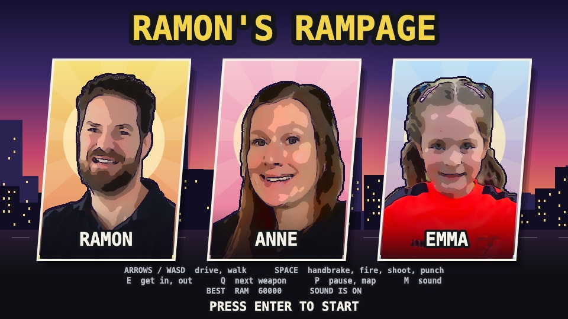

GTA 6 comes out tomorrow. I spent today building my own GTA 1.
I am not a developer. I have never written a game. By the end of the afternoon I was being chased through my own city by a police helicopter.
18 November 2026, by Ramon Wieleman
Tomorrow, 19 November, GTA 6 finally comes out. The whole world has been waiting for it for years, and it will look incredible.
But if I am honest, the GTA I have real feelings for is the first one, from 1997. You looked straight down on a city of chunky pixels. The cars slid through the corners. There was a radio. You could do whatever you wanted, and what you wanted was usually to cause chaos and then get away from the police. It is the one I remember best.
So this morning I thought: I do not want to wait for number six. I want number one back. And since AI is a daily topic in my work, I decided to see whether I could build that feeling myself. Today. Without being able to program.
The result is called Ramon's Rampage, and it runs in your browser. Play it
Arrows or WASD to drive and walk, E to get in and out of a car, Space for the handbrake, P for the map.

I am a Group Director at OpenValue. I know a fair bit about IT and AI, but I do not write software; we have people for that who are far better at it than I will ever be. I built this with Claude Code, an AI that writes the code, runs it and tests it while you talk to it. Here is what I did, in the order I did it.
I asked what I needed
My first message was not "build me a game". It was a question: I want to rebuild the game I loved, which tools do I need and which AI model is best for it?
The answer was a short list of add-ons that make the AI work more carefully: one that makes it ask questions before it builds, one that makes it write a plan, one that makes it test everything it makes. I said: add them. That took a minute and it shaped the rest of the day.
I said what I loved, not how to build it
Then it asked me what I actually wanted. Not in technical terms. What did I love about that old game?
I wrote: the pixel look. The way the cars handled. Walking around with your character. Driving around freely, chaos, and getting away from the police. Missions I could do without.
That was the whole brief. It turned out to be enough. I think this is the most useful thing I learned today: you do not have to know how something is built. You have to know what it should feel like, and say it plainly.
The AI said no, and it was right
I asked it to call the game "Grand Theft Auto: Ramon's Rampage" and to look up screenshots of the original to copy.
It refused. Politely, but it refused. It would not copy someone else's game: not the name, not the city, not the art. What it would do is build a game of my own in the same kind of world, with the same kind of camera. So it became "Ramon's Rampage", with its own city, its own cars and its own police.
I pushed a few more times during the day. I asked for a cover like the one of GTA 6. Same answer, and each time it came back with something of our own instead. I was a little annoyed, and then I realised it is exactly what I would want from a colleague.
We picked the technology together
It gave me three options to build with and explained them in normal language. I liked the idea of a real game engine, but that would have made it hard for the AI to test its own work. We settled on a mix: a library called Phaser that runs in any browser, organised the tidy way a game engine would do it.
I did have one demand, because I am still an IT person: I wanted the newest version. I asked what the differences were and whether switching at that point was wise, and we went with the newest.
I asked for sketches, and rejected them
Before any real code, it showed me sketches of how the city could look. My reply was: none of these look right. The old game was not completely flat. The buildings had depth; they leaned away from you as you drove past.
So it made a small page with a slider for how much the buildings lean. I moved the slider until it felt like 1997 and said: that one. Setting 80, for the record.

Step one was only driving
The plan had seven steps. The first one was nothing but a car and a city. No police, no people, no points. Just: does driving feel good?
It did. The steering was right the first time. The rest I had opinions about, and I gave them the way you would to a contractor:
- The car looks blocky at speed.
- The alleys are too narrow to drive into.
- The city is too square and too boring. Give me different block sizes.
- The parks with trees are great. Half as many trees, though.
A little later all of that was fixed. Playing something small early, and saying what bothers you, works much better than describing everything up front.
Then I started asking for fun things
Once the car worked I got greedy. A tank that can shoot, but rare: one in a hundred vehicles. Trucks with a trailer that actually hinges. Tanks and trucks that drive over other cars, which then burn and blow up.
And things that are just for me. The quiet part of town is called Santpoort-Noord, where I live. The biggest park is named after my daughter. There is a flower shop with my wife's name on the roof, an OpenValue tower, Code Nomads vans, and a banner for the Harddraverij, the harness race in my village that I help organise. None of it gets in the way of the game. You just find it if you look around.

I left, and told it to keep going
At some point I had to leave for a few hours. I typed: keep building on your own judgement until the game is completely finished and tested, and make sure I can adjust things step by step afterwards.
When I came back there was traffic that brakes when you step into the road, pedestrians who run when they hear shots, police with five alert levels, weapons, sound, a title screen, and a build log in which every decision it had made on my behalf was written down, with where to change it if I disagreed.
What impressed me most was not the building. It was the checking. It had asked a second AI, one that had not seen any of the work, to review everything. That reviewer found real mistakes. My favourite: you got points when the police ran over a pedestrian while chasing you. You could stand still, let the police cause the accidents, and watch your score go up. That got fixed before I ever saw it.
I played it and kept a wish list
Then came the best part of the day. I played, and every time I thought "it would be nice if", I typed it. Often three wishes in a row while it was still working on the first.
- Music, with a different radio station in every car.
- Show me when police are coming up behind me.
- The tank is indestructible. Fix that.
- The sea is a wall. If I drive into it I want to sink.
- Skid marks when I use the handbrake. Tracks in the grass.
- If I have no weapon, let me throw a punch.
- At the highest alert level: police tanks and a helicopter.
- A map in the corner, with the names of the districts.
- A different start every time, with the weapons somewhere else.
Every one of those is in the game now. The music is composed by the AI too: eight stations, written as patterns of notes, played by the browser. There is no sound file anywhere.

My family joined the cast
The last thing I wanted was a proper opening, the way games used to have: credits, a cast, a title that lands with a bang. I gave it three photos, of me, my wife Anne and our daughter Emma.
It cut each of us out of our photo, on my own laptop, without sending the photos anywhere, and redrew us as characters with flat colours and ink lines. On the title screen we even breathe a little.

What it added up to
| Time | One day, with a break of a few hours in the middle. |
|---|---|
| Code written by me | None. |
| Code written by the AI | About 10,000 lines, in some 80 small saved steps. |
| Automatic tests | 300. They run in a few seconds and they all pass. |
| Times the AI told me no | A handful. All about not copying a game that already exists. |
What I take from it
At work, what AI means for software teams comes up all the time. Today made a few things very concrete for me.
Describe the feeling. "The buildings should lean" got me further than any technical instruction I could have invented.
Small steps you can try. Seven steps, each one playable. I never had to judge something I could not see.
Make it check itself. The tests and the second reviewer are the reason I could leave for a few hours and come back to something that worked. Without them I would have come back to a mess that looked finished.
Write decisions down. The build log is why I, a non-developer, can still change things. Every number that matters, how fast a car goes, how many police cars come after you, sits in a plain settings file with a name I understand.
It is not magic, and it is not a toy. I did not build this alone and neither did the AI. I knew what I wanted; it knew how to make it. That is a different way of working than I am used to, and I think a lot of our work is going to look like this.
And now, if you will excuse me: GTA 6 comes out tomorrow, and I have a helicopter to shake off first.
It needs a keyboard, so it works best on a laptop or desktop.